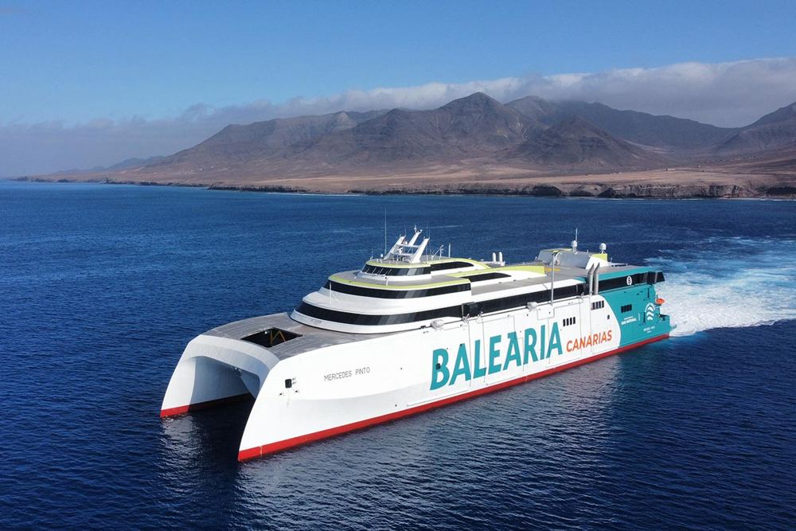
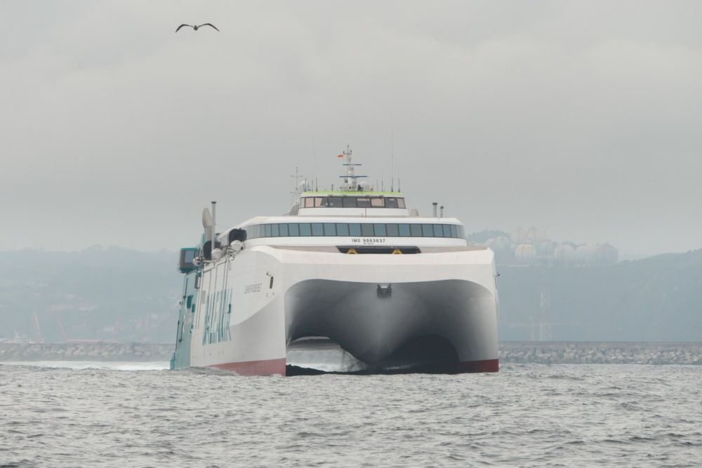
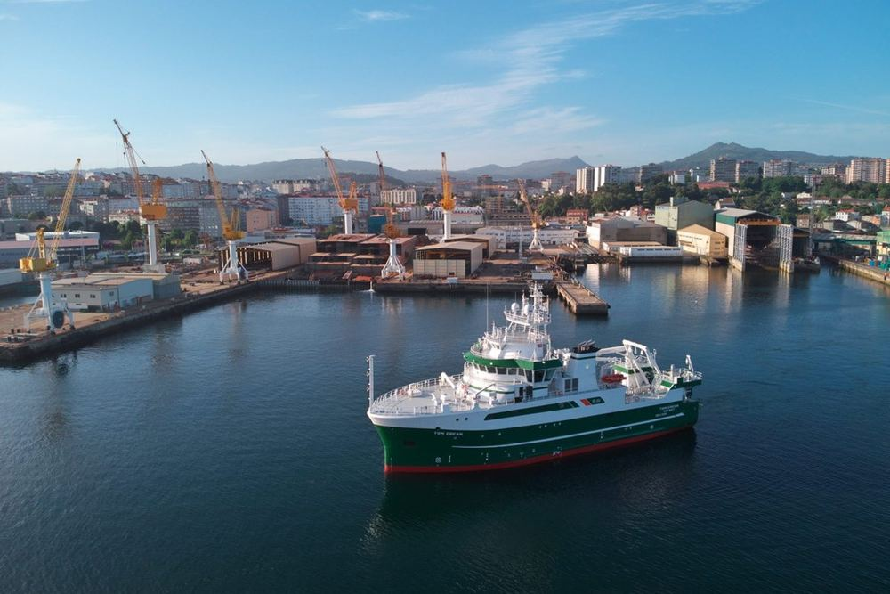
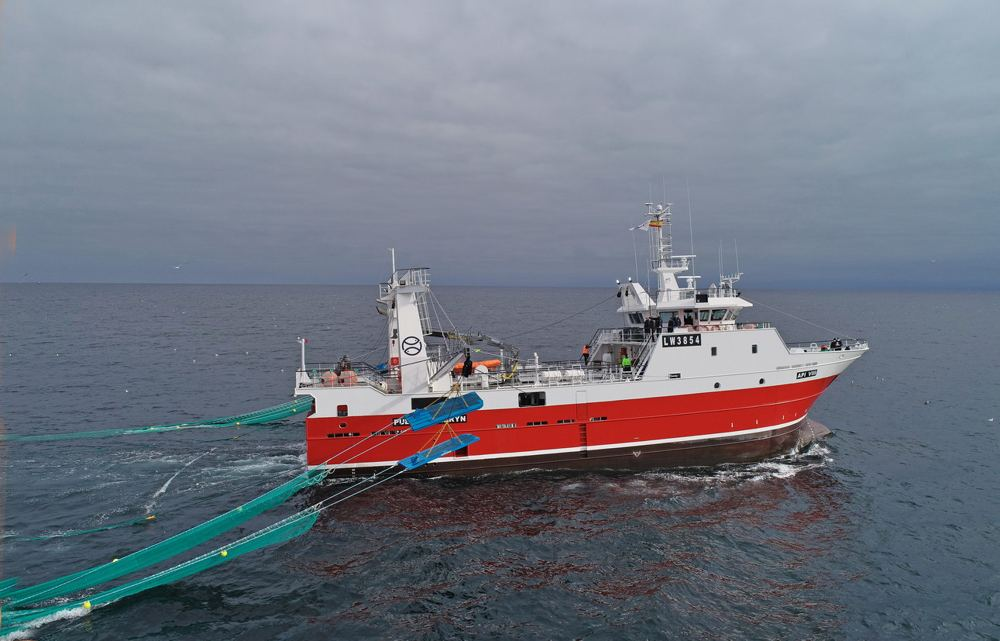
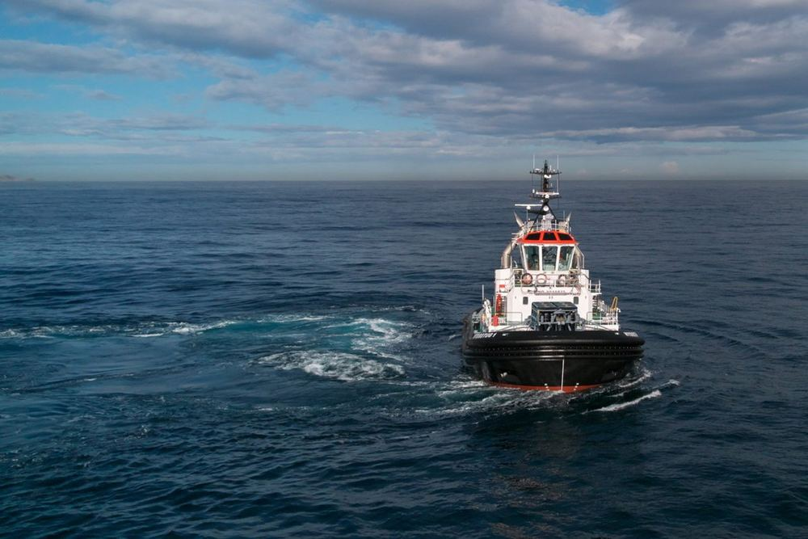
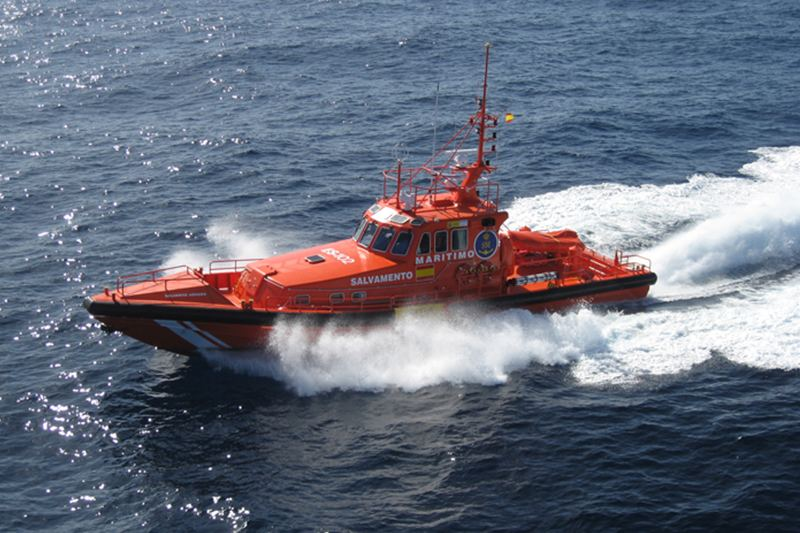
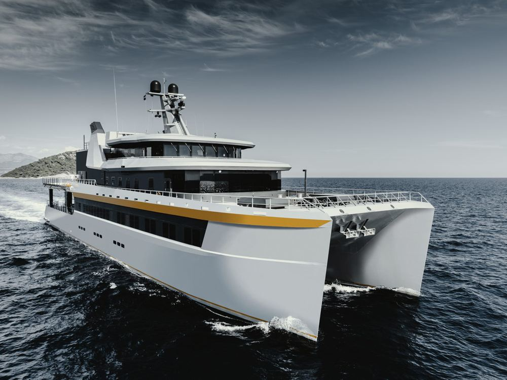
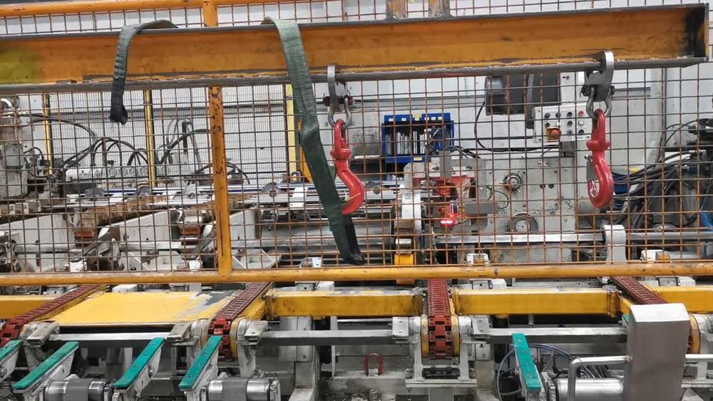
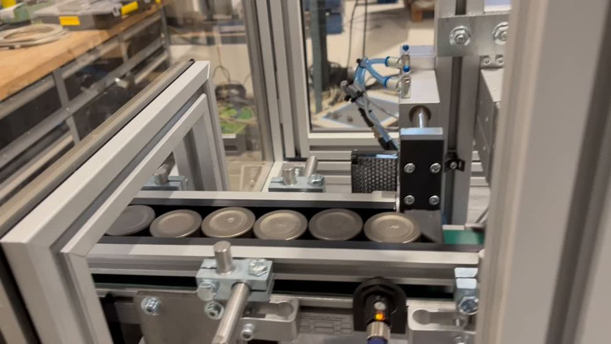
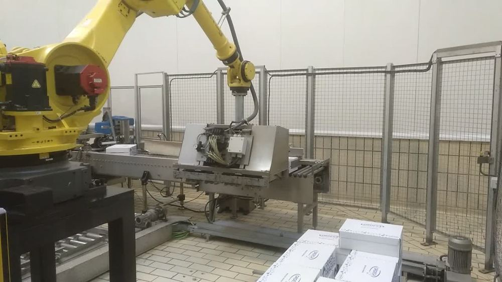

Navega con todo bajo control.
Radar, ECDIS, navegación, comunicaciones GMDSS, alarmas y CCTV a bordo: ingeniería, integración, instalación y servicio técnico.

Radar, VHF, GNSS y sensores meteorológicos en el puente.
en Google
4,4 de media en 33 reseñas. Respuesta rápida y material en stock.
Ver todas las reseñas → Fragmentos literales de reseñas de 5 estrellas en Google.
Más de 200 buques avalan su trayectoria.
Ferries de alta velocidad, buques de investigación, pesqueros de altura, remolcadores y salvamento: una selección de su archivo técnico.






Para conectar, controlar y mejorar.
Desde la selección de una referencia hasta una solución completa de control, inspección, manipulación o trazabilidad: componentes, IT industrial, instrumentación y automatización.
- PLC, HMI y SCADA, robótica y visión artificial
- Metrología y control dimensional en línea
- Redes industriales, captura de datos y ciberseguridad
- Retrofitting de maquinaria con el menor impacto en producción



Del componente al puente entero. Lo estudiamos contigo.
Tres preguntas rápidas y tu consulta sale ya escrita por WhatsApp, con un código propio.
- Naval e industrial
- Menos de un minuto
- O llama al 985 35 34 51
Esto falta para completar la web.
- ¿El WhatsApp 684 60 52 67 atiende consultas navales e industriales, o solo tienda? [confirmar]
- Instagram, Facebook y LinkedIn: los iconos de su web no llevan enlace → [@usuario]
- Fotos propias del taller, del equipo y de instalaciones a bordo: […]
- Año de fundación de Electrónica Edimar: [____]
En Gijón, calle Max Planck.
| Lunes a viernes | 8:00–14:00 · 15:00–17:00 |
|---|---|
| Sábado y domingo | Cerrado |
Antes de venir, confirma tu consulta por correo o teléfono y la tendrán preparada.
¿Trabajáis en buques nuevos y en reformas?
Sí: participan en nuevas construcciones y modernizan buques en operación, integrando la tecnología nueva con los sistemas existentes.
¿Con qué marcas trabajáis?
Furuno, TimeZero, Simrad, SAILOR, Jotron, Icom, RHOTHETA, Zenitel, Wempe, Avitech, Praxis, Raymarine, Victron Energy, Hikvision, Dahua y Axis en naval; Omron, Keyence, SICK, ifm, Pilz y más en industria.
¿Ofrecéis mantenimiento a bordo?
Sí: diagnóstico, reparación, mantenimiento preventivo y asistencia especializada para que los equipos estén siempre disponibles.
¿Podéis modernizar una máquina existente?
Sí: sustituyen equipos obsoletos, renuevan cuadros, actualizan comunicaciones y adaptan el software con el menor impacto en producción.
¿Vendéis componentes sueltos?
Sí: distribuyen componentes de automatización, sensórica, instrumentación, conectividad y medida, y te ayudan a elegir el adecuado.